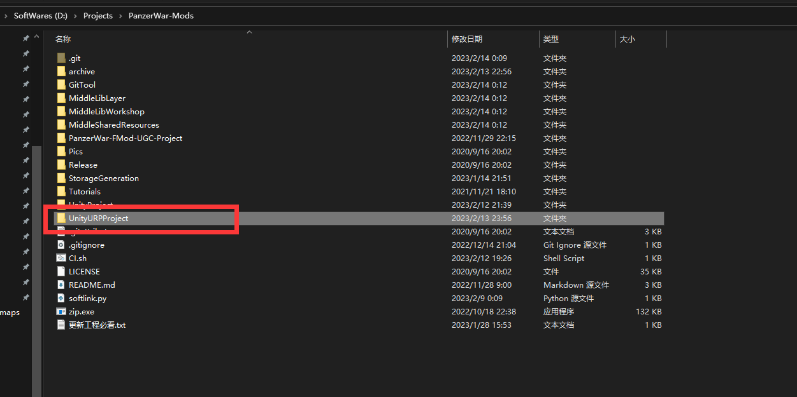
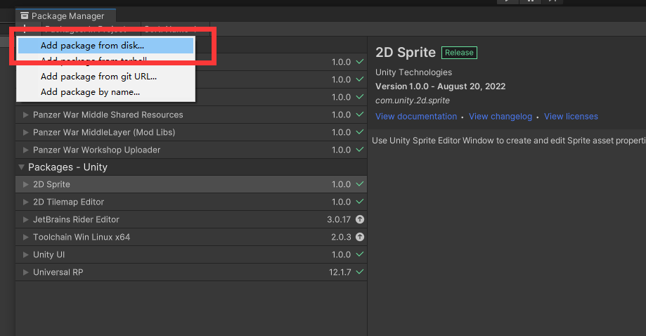
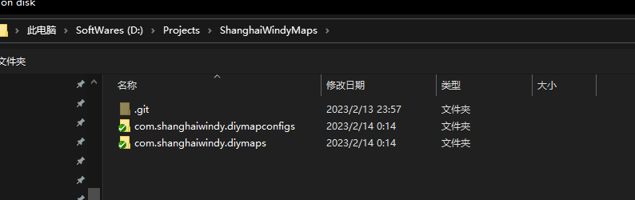
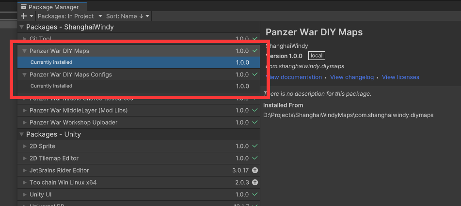
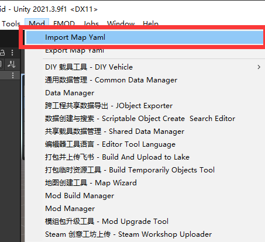
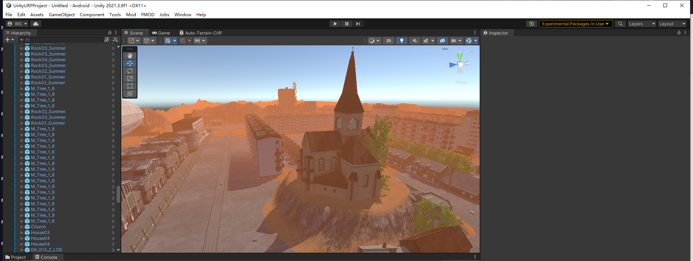

28.2. DIY 地图工程导入
拉取 DIY 素材
本仓库包含 DIY 地图的美术素材以及 DIY 地图的配置文件。 导入 Yaml 配置是必备的。
使用 git 拉取项目： https://gitlab.waroftanks.cn/modder/ShanghaiWindyMaps
打开 URP 工程场景
确保拉取了默认的 Mod 工程，然后使用 Unity 打开 UnityURPProject 文件夹

导入包
打开 Package Manager，导入本地的 DIY 素材包

选中这两个文件夹下的 package.json

正确安装后，素材和配置都会显示已经装配至工程

导入 DIY 地图的 Yaml，位于游戏的 saves 文件夹下

导入后，可以对场景进行编辑与修改。可以通过打包成 Mod 场景的方式，将此地图发布。
若只是改了位置，也可以选择导出地图的 Yaml
